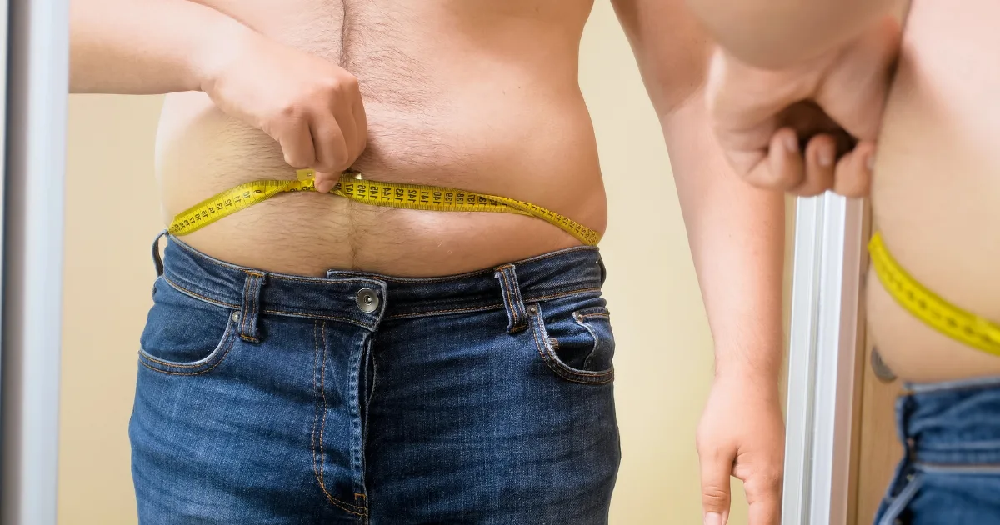

BMI vs. jiné metody měření tělesného složení
Index tělesné hmotnosti, známý pod zkratkou BMI, patří mezi nejrozšířenější ukazatele pro rychlé posouzení, zda se hmotnost člověka pohybuje v rozmezí považovaném za zdravé. Jeho obliba vychází z jednoduché výpočtové formule, která vyžaduje pouze dvě hodnoty: tělesnou hmotnost v kilogramech a výšku v metrech. Díky tomu si BMI může spočítat prakticky každý, ať už doma, v ordinaci lékaře, nebo pomocí online kalkulačky.
Jednoduchost BMI je ovšem zároveň jeho největší slabinou. Tento ukazatel totiž nerozlišuje, z čeho se tělesná hmotnost skládá. Neříká nám nic o poměru svalové a tukové tkáně, neodhalí rozložení tuku v těle a nezohledňuje ani faktory jako věk, pohlaví, etnicitu nebo fyzickou zdatnost. Člověk s výraznou svalovou hmotou může mít podle BMI nadváhu, přestože jeho procento tělesného tuku je velmi nízké. Naopak osoba s normálním BMI může skrývat nebezpečně vysoký podíl viscerálního tuku kolem vnitřních orgánů.
V tomto článku podrobně porovnáme BMI s dalšími metodami hodnocení tělesného složení. Představíme měření procenta tělesného tuku, obvod pasu a poměr pas/boky, pokročilé laboratorní metody jako DEXA sken a hydrostatické vážení i běžně dostupnou bioimpedanční analýzu. U každé metody se zaměříme na princip fungování, přesnost, dostupnost a praktické využití, abyste si mohli zvolit ten nejlepší přístup pro vaši situaci.
Omezení BMI jako ukazatele zdraví
BMI bylo původně vyvinuto belgickým matematikem Adolphem Queteletem v 19. století jako statistický nástroj pro popis populačních trendů, nikoli jako diagnostický ukazatel pro jednotlivce. Přesto se během 20. století stalo základním nástrojem pro klasifikaci hmotnostních kategorií ve zdravotnictví. Pro pochopení jeho limitů je důležité vědět, co přesně BMI měří a co naopak opomíjí.
Nerozlišuje svalovou a tukovou tkáň. Svalová tkáň je přibližně o 18 % hustší než tuková tkáň. To znamená, že sportovci a lidé s vyšším podílem svalů mohou být podle BMI klasifikováni jako osoby s nadváhou, přestože jejich skutečné riziko metabolických onemocnění je nízké. Klasickým příkladem jsou kulturisté, vzpěrači nebo ragbisté, jejichž BMI často přesahuje hodnotu 30, ačkoliv mají tělesný tuk pod 15 %.
Nezohledňuje rozložení tuku. Medicínský výzkum posledních desetiletí jasně prokázal, že rozhodující není pouze celkové množství tuku, ale také místo jeho ukládání. Viscerální tuk, tedy tuk uložený kolem vnitřních orgánů v břišní dutině, představuje výrazně větší zdravotní riziko než podkožní tuk na stehnech či bocích. Dva lidé se stejným BMI mohou mít zcela odlišné zdravotní riziko v závislosti na tom, kde se jejich tuk nachází.
Nerespektuje věk, pohlaví a etnicitu. S přibývajícím věkem přirozeně dochází k úbytku svalové hmoty a nárůstu tukové tkáně, i když se celková hmotnost nemění. Ženy mají fyziologicky vyšší podíl tělesného tuku než muži. Výzkumy rovněž ukazují, že obyvatelé východní a jižní Asie čelí vyššímu metabolickému riziku při nižších hodnotách BMI než evropská populace. BMI žádný z těchto faktorů nezohledňuje, což může vést k falešně uklidňujícím nebo naopak zbytečně alarmujícím výsledkům.
Nezachycuje změny v průběhu času. Pokud člověk začne pravidelně cvičit, může současně nabírat svalovou hmotu a ztrácet tuk. Jeho BMI se přitom nemusí vůbec změnit, nebo se dokonce zvýší, přestože jeho zdravotní stav se objektivně zlepšil. Proto je důležité BMI chápat jako orientační hodnotu a doplňovat ji dalšími metodami měření.
Zvláštní pozornost si zaslouží hodnocení BMI u dětí a dospívajících, kde je nutné používat věkově specifické percentily namísto pevných kategorií pro dospělé.

Procento tělesného tuku
Procento tělesného tuku je jedním z nejpřesnějších způsobů, jak posoudit skutečné tělesné složení. Na rozdíl od BMI přímo udává, jakou část celkové hmotnosti tvoří tuková tkáň. Tato hodnota má přímou souvislost se zdravotním rizikem, protože právě nadměrný tuk, nikoli samotná hmotnost, je spojený s rozvojem kardiovaskulárních onemocnění, cukrovky 2. typu, vysokého krevního tlaku a dalších civilizačních chorob.
Zdravé rozmezí tělesného tuku se výrazně liší podle pohlaví. Ženy potřebují vyšší podíl tuku pro správnou funkci hormonálního systému, reprodukci a ochranu vnitřních orgánů. Následující tabulka uvádí orientační hodnoty pro různé kategorie:
| Kategorie | Muži | Ženy |
|---|---|---|
| Esenciální tuk | 2–5 % | 10–13 % |
| Atletické rozmezí | 6–13 % | 14–20 % |
| Fitness rozmezí | 14–17 % | 21–24 % |
| Průměrné rozmezí | 18–24 % | 25–31 % |
| Obezita | 25 % a více | 32 % a více |
Metody měření tělesného tuku
- Měření kožních řas kaliperem – speciální kleště změří tloušťku kožní řasy na několika místech těla (triceps, lopatka, kyčle, břicho). Přesnost: ±3–5 procentních bodů, závisí na zkušenosti měřící osoby.
- Bioimpedanční analýza (BIA) – slabý elektrický proud procházející tělem měří odpor tkání. Tuková tkáň klade větší odpor než svalová. Dostupná v domácích váhách i profesionálních přístrojích.
- DEXA sken – zlatý standard. Dva paprsky rentgenového záření přesně rozliší kostní, tukovou a beztukovou tkáň po jednotlivých segmentech těla.
- Hydrostatické (podvodní) vážení – využívá Archimédova zákona. Velmi přesná metoda, ale prakticky náročná (nutnost úplného ponoření a maximálního výdechu).
Obvod pasu a poměr pas/boky (WHR)
Měření obvodu pasu je jednou z nejjednodušších a přitom nejúčinnějších metod, jak odhadnout množství viscerálního tuku, tedy tuku uloženého v břišní dutině kolem vnitřních orgánů. Právě viscerální tuk je z hlediska zdraví nejnebezpečnější, protože produkuje zánětlivé látky a hormony, které zvyšují riziko srdečních onemocnění, mozkové mrtvice, cukrovky 2. typu a některých typů rakoviny.
Prahové hodnoty obvodu pasu (WHO)
- Muži – zvýšené riziko: nad 94 cm, výrazně zvýšené: nad 102 cm
- Ženy – zvýšené riziko: nad 80 cm, výrazně zvýšené: nad 88 cm
Měření se provádí měřicí páskou v úrovni pupku, nejlépe ráno nalačno ve stoje při normálním výdechu.
Ještě přesnější informaci o rozložení tuku poskytuje poměr pasu a boků, anglicky Waist-to-Hip Ratio (WHR). Tento ukazatel porovnává obvod pasu s obvodem boků a pomáhá rozlišit tzv. jablkový typ obezity (tuk se ukládá převážně v oblasti břicha) od hruškového typu (tuk na bocích a stehnech). Jablkový typ je spojený s výrazně vyšším rizikem metabolických komplikací.
WHR (Waist-to-Hip Ratio):
WHR = obvod pasu (cm) ÷ obvod boků (cm)
Zvýšené riziko: muži > 0,90 | ženy > 0,85
Výhodou měření obvodu pasu a WHR je jejich naprostá jednoduchost a nulové náklady. Stačí běžná krejčovská metr a výsledek získáte za pár sekund. Tyto ukazatele se navíc dobře hodí pro sledování pokroku při hubnutí, protože úbytek viscerálního tuku se na obvodu pasu projeví dříve než na hodnotě BMI. Studie ukazují, že kombinace BMI s obvodem pasu poskytuje výrazně lepší předpověď zdravotního rizika než samotné BMI. Proto řada lékařů a dietologů doporučuje měřit obvod pasu jako standardní součást preventivních prohlídek.
Je ovšem třeba pamatovat na to, že ani obvod pasu nerozliší podkožní a viscerální tuk. Dva lidé se stejným obvodem pasu mohou mít odlišné množství viscerálního tuku. Pro přesné stanovení viscerálního tuku je nutné využít zobrazovací metody, jako je CT nebo MRI vyšetření.
DEXA sken a hydrostatické vážení
DEXA sken (Dual-Energy X-ray Absorptiometry)
DEXA je dnes považován za referenční metodu měření tělesného složení. Původně vyvinut pro diagnostiku osteoporózy, dnes slouží ke komplexní analýze tělesného složení. Přístroj vysílá dva paprsky rentgenového záření o různé energii – kostní, tuková a beztuková tkáň je pohlcují různou měrou.
- Výhody: regionální analýza (trup, paže, nohy), odhad viscerálního tuku, přesnost ±1–2 procentní body, vyšetření trvá 10–20 minut
- Nevýhody: omezená dostupnost, cena 1 000–3 000 Kč v ČR, nízká dávka ionizujícího záření (srovnatelná s jedním dnem přirozeného pozadí)
Hydrostatické (podvodní) vážení
Dříve zlatý standard, dnes nahrazený DEXA skenem. Vychází z Archimédova zákona – člověk je zvážen na vzduchu a po ponoření do vody. Tuková tkáň je méně hustá než voda, svalová a kostní tkáň jsou hustější, takže z rozdílu hmotností se přesně vypočítá hustota těla a podíl tuku.
- Výhody: vysoká přesnost ±1,5–2 procentní body, srovnatelná s DEXA
- Nevýhody: nutnost úplného ponoření a maximálního výdechu, dostupnost pouze v několika specializovaných zařízeních (univerzity, sportovní výzkumná centra)
Bioimpedanční analýza (BIA)
Jak BIA funguje
Přístrojem prochází velmi slabý elektrický proud (zcela bezpečný a nebolestivý), který tělem putuje různou rychlostí v závislosti na typu tkáně. Svalová tkáň (bohatá na vodu a elektrolyty) klade nízký odpor, zatímco tuková tkáň klade odpor vyšší. Z naměřené impedance přístroj vypočítá odhad tělesného tuku, beztukové hmoty a celkové tělesné vody.
Domácí vs. profesionální přístroje
- Domácí váhy – měří proud jen přes nohy, omezená přesnost (nezachytí horní část těla)
- Profesionální segmentální BIA – 8 elektrod na chodidlech i rukách, měří 5 segmentů těla (obě paže, obě nohy, trup), podstatně přesnější výsledky
Přesnost a omezení
Přesnost BIA je silně ovlivněna stavem hydratace. Profesionální přístroje dosahují přesnosti ±3–5 procentních bodů oproti DEXA, domácí váhy mohou vykazovat vyšší odchylky.
Faktory ovlivňující přesnost měření:
- Dehydratace – nadhodnotí podíl tuku
- Nadměrné pití tekutin nebo intenzivní cvičení – podhodnotí podíl tuku
- Konzumace alkoholu a kofeinu
- Menstruační cyklus u žen
- Teplota pokožky
Doporučení: měřte vždy ve stejnou dobu, nejlépe ráno nalačno, po vyprázdnění močového měchýře a před cvičením. BIA je ideální pro sledování trendů v čase – i když absolutní hodnota nemusí být dokonale přesná, změny měřené za stejných podmínek spolehlivě odrážejí skutečné změny v tělesném složení.
Srovnávací tabulka všech metod
Následující tabulka přehledně shrnuje hlavní vlastnosti všech popsaných metod měření tělesného složení. Při výběru metody je důležité zvážit, co od měření očekáváte. Potřebujete rychlý orientační přehled, nebo přesnou diagnostiku? Hledáte levné domácí řešení, nebo jste ochotni investovat do profesionálního vyšetření? Každá metoda má své místo a ideální je je vzájemně kombinovat.
| Metoda | Přesnost | Dostupnost | Cena | Vhodnost |
|---|---|---|---|---|
| BMI | Nízká | Velmi vysoká | Zdarma | Základní screening |
| Obvod pasu / WHR | Střední | Velmi vysoká | Zdarma | Riziko viscerálního tuku |
| Kožní řasy (kaliper) | Střední | Střední | Nízká | Odhad tělesného tuku |
| BIA | Střední | Vysoká | Nízká–střední | Domácí monitoring |
| DEXA | Vysoká | Nízká | Vysoká | Přesná analýza složení |
| Hydrostatické vážení | Vysoká | Velmi nízká | Vysoká | Výzkum, sport |
Z tabulky je patrné, že neexistuje jedna univerzálně nejlepší metoda. BMI zůstává užitečným screeningovým nástrojem pro velké populace a jako první orientační vodítko. Pro domácí sledování je ideální kombinace BMI s měřením obvodu pasu a případně BIA váhou. Pokud potřebujete skutečně přesnou analýzu tělesného složení, například pro sportovní diagnostiku nebo při řešení zdravotních komplikací spojených s obezitou, je DEXA sken jednoznačně nejlepší volbou.
Za zmínku stojí, že žádná z těchto metod sama o sobě nenahradí komplexní lékařské vyšetření. Hodnoty jako krevní tlak, hladina cholesterolu, glykémie nalačno, zánětlivé markery a další laboratorní parametry poskytují o zdravotním stavu informace, které žádné měření tělesného složení nemůže zachytit. Optimální přístup proto kombinuje hodnocení tělesného složení s laboratorními výsledky a celkovým klinickým posouzením.
Kterou metodu zvolit?
Výběr správné metody závisí na vašich cílech, finančních možnostech a dostupnosti.
Běžná populace a domácí sledování
- Kombinujte BMI + měření obvodu pasu – bezplatné, rychlé, lepší obrázek než BMI samotné.
- Pro pokročilejší sledování si pořiďte kvalitní BIA váhu s elektrodami na rukojetích.
- Měřte se pravidelně za stejných podmínek (1× týdně ráno nalačno) a zaměřte se na dlouhodobé trendy.
Sportovci a aktivní lidé
- BMI může být zavádějící – zaměřte se na procento tělesného tuku (segmentální BIA nebo kaliper).
- Absolvujte DEXA sken jednou za 3–6 měsíců pro přesnou analýzu.
- Sledujte obvod pasu a výkonnostní ukazatele.
Osoby s nadváhou a obezitou
- Klíčový je obvod pasu – pokles byť jen o 5 cm znamená významné snížení zdravotního rizika.
- Na začátku léčby může být přínosný DEXA sken jako výchozí hodnota pro sledování pokroku.
- Praktické tipy pro snížení BMI najdete v našem kompletním průvodci hubnutím.
Klinické a výzkumné účely
- Preferovány jsou přesné metody: DEXA sken nebo profesionální segmentální BIA.
- Hydrostatické vážení se stále využívá jako referenční metoda pro validaci jiných postupů.
Bez ohledu na zvolenou metodu platí, že žádné číslo by nemělo být vaším jediným ukazatelem zdraví. Jak se cítíte, jaké jsou vaše laboratorní výsledky a celková pohoda – to vše je důležité.
Chcete si spočítat své BMI jako výchozí bod? Vyzkoušejte naši bezplatnou BMI kalkulačku, která vám okamžitě ukáže vaši hmotnostní kategorii a doporučí další kroky.